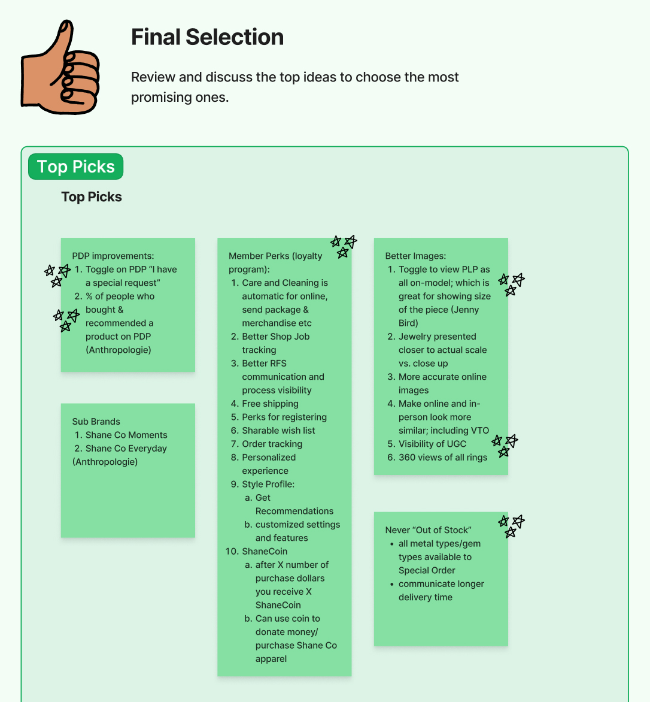

UX Retrospective & Strategic Ideation Workshop
- Role: Lead UX Researcher (Co-Facilitator)
- Scope: Ecommerce experience strategy
- Participants: 30+ cross-functional stakeholders (Product, Design, Engineering, CX, Marketing, Operations)
- Business Impact: Customer-centric opportunities informed annual roadmap planning
Context
During a week-long, in-person ecommerce summit, I was asked to co-lead a large-scale research and ideation workshop focused on identifying opportunities to make Shane Co's ecommerce experience more customer-centric. As the lead researcher in the room, my role was to design and facilitate a structured process that aligned diverse perspectives, surfaced meaningful customer insights, and translated qualitative input into actionable priorities for the business.
Research Framing & Preparation
To ground the session in evidence rather than opinion, I designed a pre-work exercise that ensured participants arrived with customer- and market-informed inputs:
- Competitive landscape review: Participants analyzed assigned competitors with a focus on ecommerce levers such as personalization, loyalty, brand differentiation, and urgency.
- Customer insight reflection: Participants documented pain points and moments of delight based on their direct interactions with our customers across channels.
The objective was to generate a wide set of customer-centric observations and opportunities, intentionally separating insight generation from solutioning
Workshop Design & Facilitation
With only 2.5 hours and a large audience, I applied facilitation techniques optimized for scale, engagement, and prioritization.
- Opened the session by clearly defining goals, success criteria, and working norms
- Guided individual idea generation to reduce groupthink and ensure all voices were represented
- Structured insights using a Glad, Mad, Sad retrospective framework to highlight emotional drivers of customer behavior
Prioritization at Scale
To move from breadth to focus, I facilitated a series of progressive micro-retrospectives:
- Pairs: Participants aligned on their top 3 to 4 highest-value insights
- Small groups: Pairs merged into groups of four, then eight, refining priorities at each stage
- Full-group synthesis: Final ideas were shared, clustered, and ranked collaboratively
This approach allowed the group to efficiently converge on high-impact opportunities while maintaining shared ownership of outcomes.
Synthesis & Strategic Impact
Following the workshop, I synthesized all insights and decisions into a centralized FigJam artifact, creating a durable research output that could be referenced beyond the session.
Outcomes:
- Established a shared, cross-functional understanding of key ecommerce customer pain points and opportunities
- Delivered a prioritized set of customer-centric initiatives tied to business goals
- Two top opportunities were incorporated into the following year's ecommerce development roadmap

Lead Researcher Contribution
- Set research direction and guardrails to keep discussions grounded in customer need
- Facilitated alignment across senior stakeholders and multiple disciplines
- Translated qualitative insights into strategic inputs for product and roadmap planning